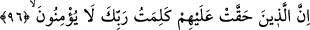

ilâhî mârifetler gibi ilhâm âyetleri olsun onları tasdik etmek, dinî ticâretin en kârlısıdır.
Onları yalanlamak ise insanların en çok zarar eden kazançlarındandır. Bu sebepledir ki
âriflerden birisi şöyle der: “Bu ilimden, yani keşfe dayalı vehbî ilimden nasibi
olmayanların kötü bir akıbete uğrayacaklarından korkarım.” Bu ilimden bir kimsenin en
az nasibi onu tasdik etmek ve ehil insanlarda bu ilmin bulunabileceğini kabul etmektir.
Vehbî ilmi inkâr edenlerin çarptırılacağı en hafif cezâ ise bu ilimden hiçbir nasip
alamamaktır. Vehbî ilim sıddîkların ve mukarreb zatların ilmidir.” İhyâü’l-ulûm’da
böyle geçmektedir.
Hz. Şeyh-i Ekber (k.s.) der ki: Peygamberlik ve velilik ilmi, akıl sınırlarının
ötesindedir. Aklın düşünerek bu ilme erişmesi söz konusu değildir. Fakat akıl, özellikle
de hiçbir hayalî şüphenin galip gelemediği akl-ı selim ancak bu ilmi kabul eder. Bize
ancak şeriatin ortaya koyduklarını kabul etmek düşer. Çünkü sen de bilirsin ki
Eş’arî’nin delili Mûtezilî birine göre şüphedir. Aksi de öyledir. Her şeye, ince eleyip
sık dokuyarak bakanlar, devamlı tek bir tavır üzere olamazlar. Bazen bir meseleden
onun tam tersini savunmaya geçebilirler.” el-Fütûhât’ta böyle geçmektedir.
Mesnevî’de şöyle denilmektedir:
Hayal âlemi, rûhlar âlemine nisbetle pek dardır.
Bu yüzden hayallere dalmak, gam ve kederlere sebep olur
Bu bakımdan müridin şek, şüphe ve taklidden kurtulup inadçının ulaşamadığı
noktalara, kendi ikrârıyla ulaşabilmesi için tevhid yolunda çok çalışması ve gerçekleri
tasdik etmesi gereklidir.
96. Gerçekten haklarında Rabbinin sözü (hükmü) sâbit olanlar.
“Gerçekten haklarında Rabbinin sözü (hükmü) sâbit olanlar.” -ki bu söz et-
Te’vîlâtü’n-Necmiyye’de belirtildiği gibi Allah Teâlâ’nın “bunlar cehennemliktir, ama
ben aldırmıyorum”[76] sözüdür. Yani, bu sözün önceden söylenmiş olmasıyla cehennem
onlara vâcib olmuştur.
Ya da “Rabb’inin kelimesi”nden maksad, onların küfür üzere öleceklerine ve ebedî
olarak cehennemde kalacaklarına dair Allah’ın hükmü ve kazâsıdır. Nitekim Allah
Teâlâ: “Rabbinin, “Andolsun ki cehennemi tümüyle insanlar ve cinlerle
dolduracağım.” kelimesi/sözü yerini buldu.” (Hûd, 12/119) buyurmuştur. Nitekim el-
İrşâd’da böyle geçmektedir.
Kâşifî ise şöyle diyor: “Onların küfür üzere ölecekleri sözü levh-i mahfuza yazılmış
ve bu durum meleklere de haber verilmiştir.”